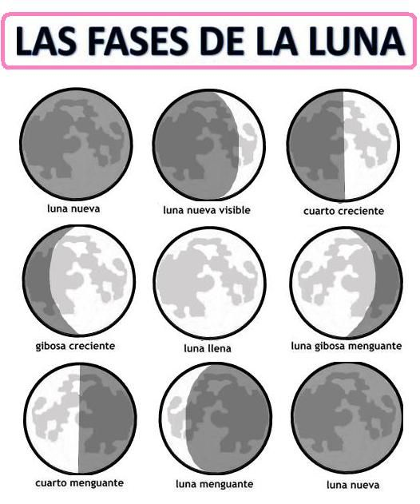

Fases de la Lluna
Com es mou la Lluna? I com la veiem desde el nostre punt de vista? Quines són les fases de la Lluna?
- Demostració de la fase Lunar, Castellà
- Simulador de les fases de la Lluna:
Simulador de les fases de la Lluna

Órbita de la Lluna
El periodo de revolución de la Luna alrededor de la Tierra, llamado mes sidéreo es de 27,32 días, sin embargo el período entre una fase nueva y la siguiente, conocido como período sinódico, lunación, o mes sinódico es de 29,53 días. Esto se debe a que durante cada revolución de la Luna la Tierra avanza unos 27° en su propia órbita alrededor del Sol, por lo que las posiciones relativas de los tres cuerpos no vuelven a ser las mismas hasta entonces.
Hi han per tant dos periodes:
- el mes sidéreo: 27,3217 dies
- el mes sinòdic: 29,5305882 dies.
Stellarium
Utilitzarem el software Stellarium per veure quina fase lunar hi havia el dia del nostre naixement. Stellarium ens permet canviar l'ubicació d'on estem. Podem utilitzar el buscador, o posar les coordenades geogràfiques, que podem trobar a google maps. Podem canviar també la data, per veure el cel el dia que nosaltres volem. Podem veure les constelacions per la nit i els planetes. També podem veure l'estrella polar (polaris), que ens indica el Nord, i si incrementem la velocitat del temps, podem veure com es manté fixe. Aquesta estrella es veu desde l'hemisferi Sud? Si algú li interessa l'astronomia, Stellarium és un programa interessant per començar.
Stellarium ens serveix per saber quina fase lunar en una data concreta. Si ho hem de fer per totes les dates de naixement de l'institut, necessitem un altre mètode. Per això necessitem l'àlgebra, que ens permet generalitzar una operació i utilitzar-la en molts casos. Aquí és on entrarà el full de càlcul.
A4: Trobeu ara la fase de la lluna en el vostre naixement amb l'Stellarium.
Comprovació: Calendario de las Fases Lunares